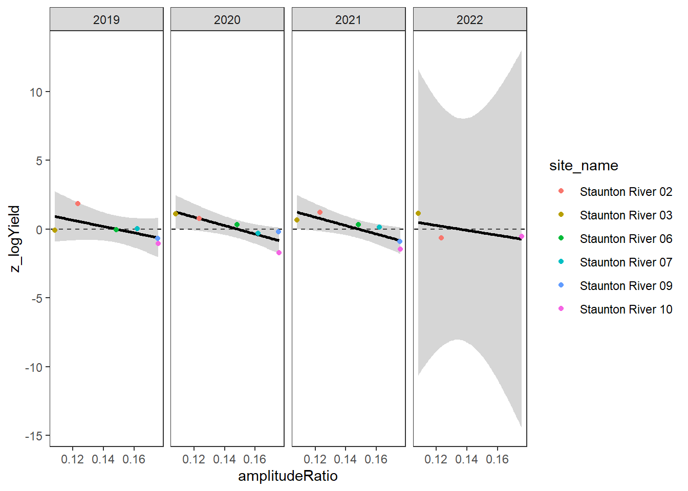

Code
siteinfo <- read_csv("C:/Users/jbaldock/OneDrive - DOI/Documents/USGS/EcoDrought/EcoDrought Working/Data/EcoDrought_SiteInformation.csv")
siteinfo_sp <- st_as_sf(siteinfo, coords = c("long", "lat"), crs = 4326)Purpose: Use boxes to highlight additional details of the data, vignettes, and case studies that demonstrate spatiotemporal streamflow heterogeneity
Site information
siteinfo <- read_csv("C:/Users/jbaldock/OneDrive - DOI/Documents/USGS/EcoDrought/EcoDrought Working/Data/EcoDrought_SiteInformation.csv")
siteinfo_sp <- st_as_sf(siteinfo, coords = c("long", "lat"), crs = 4326)Little g’s
dat_clean <- read_csv("C:/Users/jbaldock/OneDrive - DOI/Documents/USGS/EcoDrought/EcoDrought Working/EcoDrought-Analysis/Qualitative/LittleG_data_clean.csv")Big G’s
dat_clean_big <- read_csv("C:/Users/jbaldock/OneDrive - DOI/Documents/USGS/EcoDrought/EcoDrought Working/EcoDrought-Analysis/Qualitative/BigG_data_clean.csv")Climate
climdf <- read_csv("C:/Users/jbaldock/OneDrive - DOI/Documents/USGS/EcoDrought/EcoDrought Working/EcoDrought-Analysis/Qualitative/Daymet_climate.csv")
climdf_summ <- read_csv("C:/Users/jbaldock/OneDrive - DOI/Documents/USGS/EcoDrought/EcoDrought Working/EcoDrought-Analysis/Qualitative/Daymet_climate_summary.csv")Water availability
wateravail <- read_csv("C:/Users/jbaldock/OneDrive - DOI/Documents/USGS/EcoDrought/EcoDrought Working/EcoDrought-Analysis/Qualitative/BigG_wateravailability_annual.csv")Purpose: Show what high-resolution temporal data (hourly) reveals about network diversity in streamflow response to individual storms (peak flow magnitude and timing and recession rates) and during low flow (diel fluctuations)
The Wedge Model for the West Brook
Purpose: At coarser time scales (summarized by event/baseflow periods), show how streamflow heterogeneity expands and contracts during wet to dry periods.
Purpose: Show what high-resolution spatial data reveals about network diversity in streamflow at a single point in time.
Purpose: Explore the effect of groundwater on relative summer (July-September) water availability.
Load PASTA daily derived parameters: summarize as July-September site-specific means (across all years)
pasta <- read_csv("C:/Users/jbaldock/OneDrive - DOI/Documents/USGS/EcoDrought/EcoDrought Working/EcoDrought-Analysis/Covariates/pasta_derived_parameters_daily.csv") %>%
mutate(Month = month(date)) %>%
rename(CalendarYear = year) %>%
filter(Month %in% c(7:9)) %>%
group_by(site_name) %>%
summarize(meanRatio = mean(meanRatio, na.rm = TRUE),
phaseLag = mean(phaseLag, na.rm = TRUE),
amplitudeRatio = mean(amplitudeRatio, na.rm = TRUE))
pasta# A tibble: 73 × 4
site_name meanRatio phaseLag amplitudeRatio
<chr> <dbl> <dbl> <dbl>
1 Avery Brook 0.891 2.31 0.264
2 BigCreekLower 0.936 2.22 0.376
3 BigCreekMiddle 0.840 1.29 0.411
4 BigCreekUpper 0.664 2.31 0.179
5 Buck Creek 0.699 1.19 0.353
6 CoalCreekHeadwaters 0.670 2.11 0.209
7 CoalCreekLower 0.843 2.91 0.503
8 CoalCreekMiddle 0.692 1.27 0.223
9 CoalCreekNorth 0.733 2.49 0.246
10 Crandall Creek 0.758 1.76 0.612
# ℹ 63 more rowsCreate flow by groundwater plotting function.
mdaystib <- tibble(Month = c(1:12), mdays = c(31,28,31,30,31,30,31,31,30,31,30,31))
gwflowfun <- function (subbas, years, dropsites, months = c(1:12)) {
dat_clean %>%
filter(subbasin == subbas, CalendarYear %in% years, Month %in% months) %>%
group_by(site_name, subbasin, designation, CalendarYear) %>% #, Month, MonthName) %>%
summarise(ss = n(),
logYield = mean(logYield, na.rm = TRUE)) %>%
ungroup() %>%
#left_join(mdaystib) %>%
mutate(pdays = ss/92#,
#YearMonth = paste(CalendarYear, "_", Month, sep = "")
) %>%
filter(pdays > 0.9,
!site_name %in% dropsites) %>%
group_by(CalendarYear) %>%
mutate(z_logYield = scale(logYield, center = TRUE, scale = TRUE)[,1]) %>%
ungroup() %>%
left_join(pasta) %>%
ggplot(aes(x = amplitudeRatio, y = z_logYield)) +
geom_abline(intercept = 0, slope = 0, linetype = 2) +
geom_smooth(method = "lm", color = "black") +
geom_point(aes(color = site_name)) +
facet_wrap(~CalendarYear, nrow = 1) +
#facet_wrap2(~CalendarYear, nrow = 1, ncol = 5, trim_blank = FALSE) +
#facet_grid(cols = vars(Month), rows = vars(CalendarYear)) +
theme_bw() + theme(panel.grid.major = element_blank(), panel.grid.minor = element_blank())
}Plot the relationship between standardized annual summer mean discharge and amplitude ratio from PASTA, where lower amplitude ratio values are indicative of greater groundwater availability. Mean flow for each site is standardized by year to remove interannual variation in climate/regional water availability
gwflowfun(subbas = "West Brook", dropsites = c("West Brook Reservoir", "Mitchell Brook"), years = c(2020:2024))
gwflowfun(subbas = "Staunton River", dropsites = NA, years = c(2019:2022))
gwflowfun(subbas = "Snake River", dropsites = NA, years = c(2018, 2020:2022), months = c(7:9))gwflowfun(subbas = "Shields River", dropsites = NA, years = c(2017,2019,2020,2022,2023), months = c(7:9))